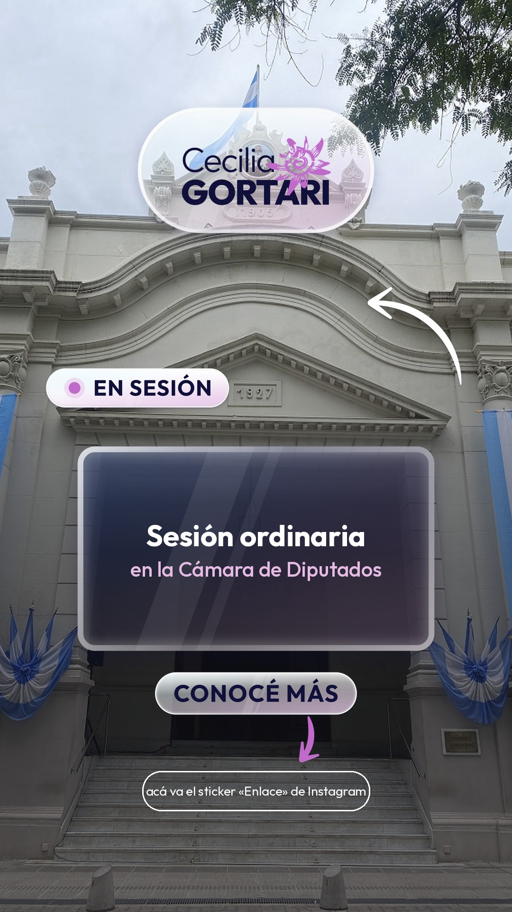
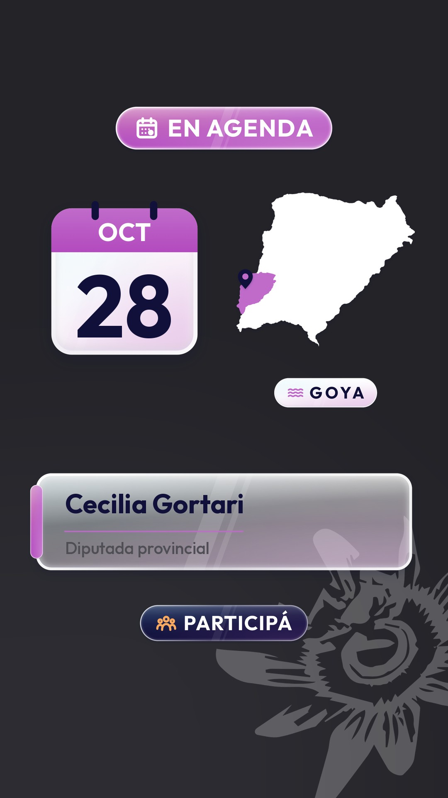

Guía de uso · octubre de 2026
| Categoría | Recursos | PNG | _RECORTE |
|---|---|---|---|
| 01 · Logos y marca | 9 | 23 | 20 |
| 02 · Flechas y marcadores | 15 | 54 | 48 |
| 03 · Cápsulas y contenedores | 9 | 30 | 25 |
| 04 · Íconos institucionales | 23 | 69 | 69 |
| 05 · Etiquetas y textos | 16 | 32 | 32 |
| 06 · Elementos creativos | 11 | 30 | 28 |
| Total | 83 | 238 | 222 |
01_LOGOS_Y_MARCA — Imagotipo, logo reducido CG, isotipo, firma con cargo, logos de vidrio, marca de agua y sello.02_FLECHAS_Y_MARCADORES — Flechas rectas, curvas, semicirculares, onduladas y con bucle; círculos, óvalos, subrayados, resaltador, destellos y corchetes.03_CAPSULAS_Y_CONTENEDORES — Cápsulas, placas de vidrio, contenedor con pestaña, barras, chips y marcos para cifras. Vacíos, para escribir encima.04_ICONOS_INSTITUCIONALES — 23 íconos en tres estilos: insignia clara, insignia oscura y trazo blanco.05_ETIQUETAS_Y_TEXTOS — Etiquetas con texto en Outfit: llamados a la acción, agenda, sesión, Corrientes, Goya…06_ELEMENTOS_CREATIVOS — Comillas, globo de diálogo, zócalo, numeradores, separador, marcos, placa de fecha, lupa, golondrinas, mapa, tilde y cruz.07_VERSIONES_PARA_RECORTES — Los mismos diseños con borde troquelado opaco, terminados en _RECORTE.08_EDITABLES — Un SVG por cada PNG, ordenado por categoría.09_CATALOGOS_Y_GUIAS — Catálogo HTML, esta guía, láminas JPG y el informe de verificación.02-03_flecha-curva_izquierda_magenta.png → categoría 02, recurso 03, nombre flecha curva y variante
(izquierda, en magenta). La misma pieza en la carpeta 07 termina en _RECORTE.png y en la carpeta 08 en .svg.
Las variantes de color indican para qué fondo están pensadas: azul noche y magenta para fondos claros; blanco para fotos y fondos oscuros; vidrio claro sobre fotos medias u oscuras; vidrio oscuro sobre fotos claras.
La carpeta está en el Escritorio de la PC, que se sincroniza con OneDrive. Adentro está el archivo
CECILIA_GORTARI_STICKERS_IPHONE.zip, preparado para el teléfono (PNG originales, versiones para Recortes, esta guía y las láminas; sin SVG ni catálogo HTML).
No hace falta guardar los 460 archivos en Fotos. Conviene empezar por los que se usan seguido (logo, firma, flechas, dos o tres etiquetas) e ir sumando.
_RECORTE. Instagram cambia estas funciones seguido y el resultado puede variar según la versión de la app.Ideal para elementos sólidos y de contorno claro: logos planos, firma, flechas, íconos, etiquetas, numeradores, cápsulas sólidas y chips.
Si la detección falla (deja afuera una flecha fina, separa las partes de un elemento, o toma el vidrio como si fuera fondo), usá la
versión de la carpeta 07_VERSIONES_PARA_RECORTES. Tiene un borde troquelado opaco —blanco en los elementos oscuros o de color,
azul noche en los claros— que une todo en una sola silueta fácil de detectar. Además, sus píxeles transparentes guardan un gris neutro, así que,
si alguna app ignorara la transparencia, el elemento aparece sobre gris y no sobre un negro incrustado.
Recomendado para: Logo de vidrio (premium), Marca de agua, Resaltador translúcido, Corchetes de foco, Cápsula de contorno, Marco de vidrio para foto, Lupa de vidrio. También sirve para cualquier pieza de vidrio cuando querés conservar el efecto translúcido completo. El sticker pegado no queda en la biblioteca de Recortes: para tenerlo a mano, guardalo en el álbum Stickers CG.
El sticker Foto está pensado para fotos: muestra la imagen dentro de un marco (rectángulo, círculo u otras formas que se alternan tocándola), así que no aprovecha la silueta de estos PNG. No lo recomendamos para los stickers de la biblioteca. Sirve para mostrar una imagen completa con marco, por ejemplo una de las historias de ejemplo o una lámina.
Columna _RECORTE: si el recurso tiene versión troquelada en la carpeta 07. Los que no la tienen son anillos, piezas separadas o semitransparentes: la detección no los mejora, conviene pegarlos.
| ID | Recurso | Arch. | Método | _RECORTE |
|---|---|---|---|---|
01-01 | Imagotipo oficial | 4 | Recortes | Sí |
01-02 | Logo reducido CG | 3 | Recortes | Sí |
01-03 | Isotipo (flor) | 3 | Recortes | Sí |
01-04 | Firma «Diputada provincial» | 2 | Recortes | Sí |
01-05 | Logo de vidrio (premium) | 2 | Copiar y pegar | Sí |
01-06 | Logo en cápsula de vidrio | 2 | Recortes | Sí |
01-07 | CG en placa de vidrio | 2 | Recortes | Sí |
01-08 | Marca de agua | 3 | Copiar y pegar | No |
01-09 | Sello circular | 2 | Recortes | Sí |
| ID | Recurso | Arch. | Método | _RECORTE |
|---|---|---|---|---|
02-01 | Flecha recta fina | 3 | Recortes | Sí |
02-02 | Flecha recta gruesa | 3 | Recortes | Sí |
02-03 | Flecha curva | 6 | Recortes | Sí |
02-04 | Flecha semicircular | 6 | Recortes | Sí |
02-05 | Flecha ondulada | 3 | Recortes | Sí |
02-06 | Flecha con bucle | 6 | Recortes | Sí |
02-07 | Chevrons hacia abajo | 3 | Recortes | Sí |
02-08 | Círculo marcador | 3 | Recortes | Sí |
02-09 | Óvalo marcador | 3 | Recortes | Sí |
02-10 | Subrayado de trazo | 3 | Recortes | Sí |
02-11 | Subrayado doble | 3 | Recortes | Sí |
02-12 | Resaltador translúcido | 3 | Copiar y pegar | No |
02-13 | Destellos | 3 | Recortes | Sí |
02-14 | Acento de énfasis | 3 | Recortes | Sí |
02-15 | Corchetes de foco | 3 | Copiar y pegar | No |
| ID | Recurso | Arch. | Método | _RECORTE |
|---|---|---|---|---|
03-01 | Cápsula de vidrio (vacía) | 3 | Recortes | Sí |
03-02 | Cápsula sólida (vacía) | 3 | Recortes | 1 de 3 |
03-03 | Cápsula de contorno | 3 | Copiar y pegar | No |
03-04 | Placa de vidrio (vacía) | 6 | Recortes | Sí |
03-05 | Contenedor con pestaña | 2 | Recortes | Sí |
03-06 | Barra de color | 4 | Recortes | Sí |
03-07 | Etiqueta chica (chip) | 5 | Recortes | Sí |
03-08 | Marco para cifra | 2 | Recortes | Sí |
03-09 | Círculo para cifra | 2 | Recortes | Sí |
| ID | Recurso | Arch. | Método | _RECORTE |
|---|---|---|---|---|
04-01 | Cámara de Diputados | 3 | Recortes | Sí |
04-02 | Proyecto de ley | 3 | Recortes | Sí |
04-03 | Expediente | 3 | Recortes | Sí |
04-04 | Educación | 3 | Recortes | Sí |
04-05 | Salud | 3 | Recortes | Sí |
04-06 | Derechos de las mujeres | 3 | Recortes | Sí |
04-07 | Participación ciudadana | 3 | Recortes | Sí |
04-08 | Justicia | 3 | Recortes | Sí |
04-09 | Calendario y agenda | 3 | Recortes | Sí |
04-10 | Ubicación | 3 | Recortes | Sí |
04-11 | Prensa y comunicación | 3 | Recortes | Sí |
04-12 | Entrevista y medios | 3 | Recortes | Sí |
04-13 | Redes sociales | 3 | Recortes | Sí |
04-14 | Diálogo y reunión | 3 | Recortes | Sí |
04-15 | Obras públicas e infraestructura | 3 | Recortes | Sí |
04-16 | Economía | 3 | Recortes | Sí |
04-17 | Producción | 3 | Recortes | Sí |
04-18 | Cultura y chamamé | 3 | Recortes | Sí |
04-19 | Golondrina (manual) | 3 | Recortes | Sí |
04-20 | Río (manual) | 3 | Recortes | Sí |
04-21 | Pez (manual) | 3 | Recortes | Sí |
04-22 | Lancha (manual) | 3 | Recortes | Sí |
04-23 | Caña de pescar (manual) | 3 | Recortes | Sí |
| ID | Recurso | Arch. | Método | _RECORTE |
|---|---|---|---|---|
05-01 | INGRESÁ ACÁ | 2 | Recortes | Sí |
05-02 | CONOCÉ MÁS | 2 | Recortes | Sí |
05-03 | EN SESIÓN | 2 | Recortes | Sí |
05-04 | EN AGENDA | 2 | Recortes | Sí |
05-05 | TRABAJANDO JUNTOS | 2 | Recortes | Sí |
05-06 | CORRIENTES | 2 | Recortes | Sí |
05-07 | NUEVA INICIATIVA | 2 | Recortes | Sí |
05-08 | DESCARGÁ EL EXPEDIENTE | 2 | Recortes | Sí |
05-09 | Y VOS, ¿QUÉ PENSÁS? | 2 | Recortes | Sí |
05-10 | DATO CLAVE | 2 | Recortes | Sí |
05-11 | DESDE LA CÁMARA | 2 | Recortes | Sí |
05-12 | REUNIÓN DE TRABAJO | 2 | Recortes | Sí |
05-13 | RECORRIDA | 2 | Recortes | Sí |
05-14 | PARTICIPÁ | 2 | Recortes | Sí |
05-15 | COMPARTILO | 2 | Recortes | Sí |
05-16 | GOYA | 2 | Recortes | Sí |
| ID | Recurso | Arch. | Método | _RECORTE |
|---|---|---|---|---|
06-01 | Comillas | 4 | Recortes | Sí |
06-02 | Globo de diálogo (vacío) | 2 | Recortes | Sí |
06-03 | Zócalo para nombre y cargo | 2 | Recortes | Sí |
06-04 | Numeradores 1 a 5 | 5 | Recortes | Sí |
06-05 | Separador con flor | 3 | Recortes | Sí |
06-06 | Marco de vidrio para foto | 2 | Copiar y pegar | No |
06-07 | Placa de fecha (calendario) | 2 | Recortes | Sí |
06-08 | Lupa de vidrio | 2 | Copiar y pegar | Sí |
06-09 | Golondrinas en vuelo | 3 | Recortes | Sí |
06-10 | Mapa de Corrientes con Goya | 3 | Recortes | Sí |
06-11 | Tilde y cruz | 2 | Recortes | Sí |
Cápsulas, placas, contenedor con pestaña, zócalo, placa de fecha, marcos y círculo para cifras, globo de diálogo y comillas vienen vacíos: agregás el sticker, lo escalás y escribís encima con la herramienta de texto de Instagram.
Dos ejemplos armados solo con piezas de la biblioteca (los textos son ilustrativos: en una historia real se escriben en Instagram).

Ejemplo 1 · logo en cápsula, «EN SESIÓN», placa de vidrio y «CONOCÉ MÁS» sobre el sticker de enlace real.
Ejemplo 2 · «EN AGENDA», placa de fecha, mapa con Goya, zócalo y «PARTICIPÁ».